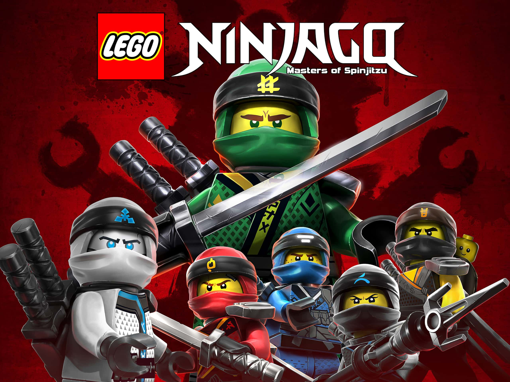
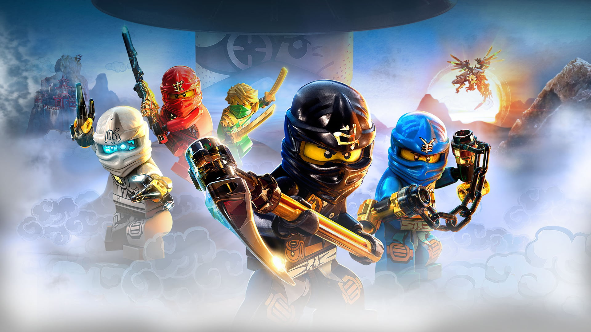
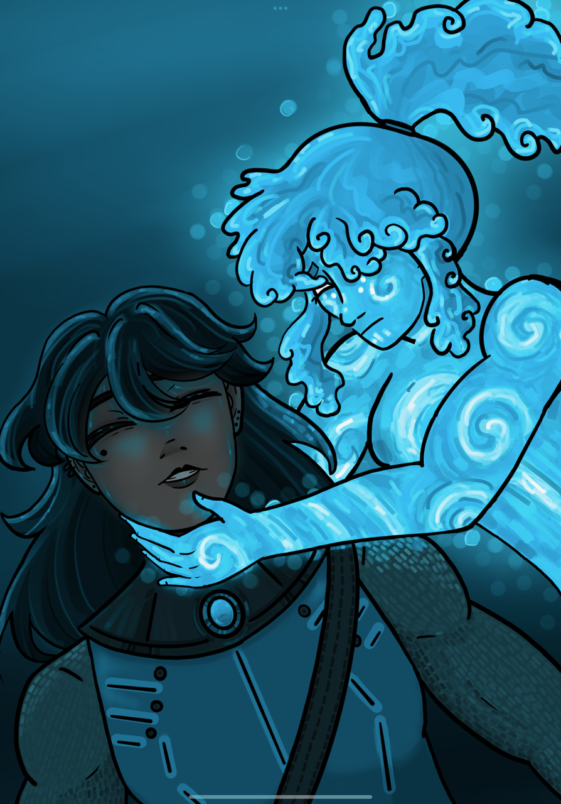
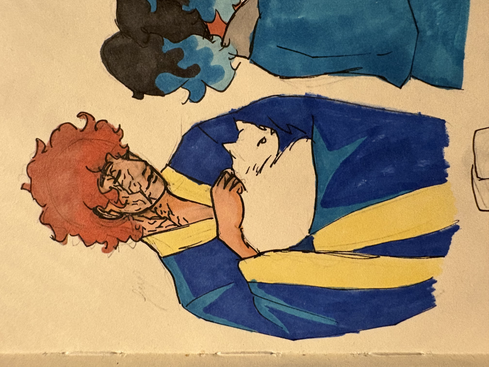
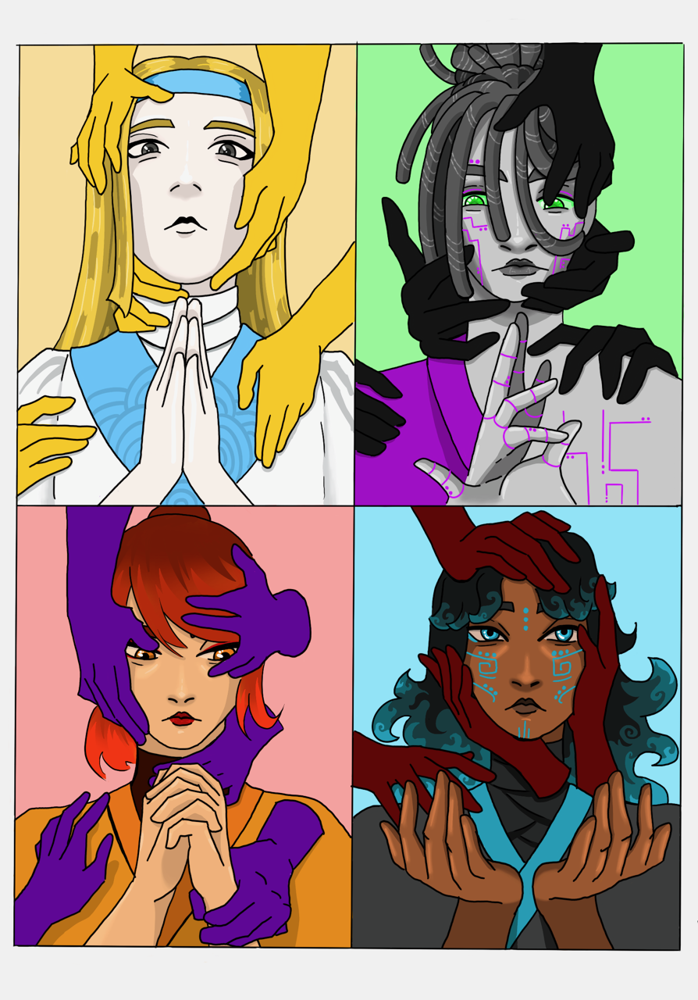
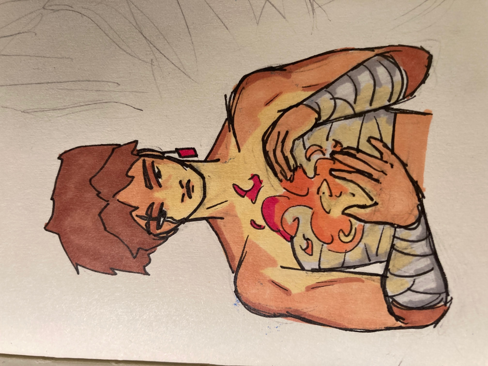
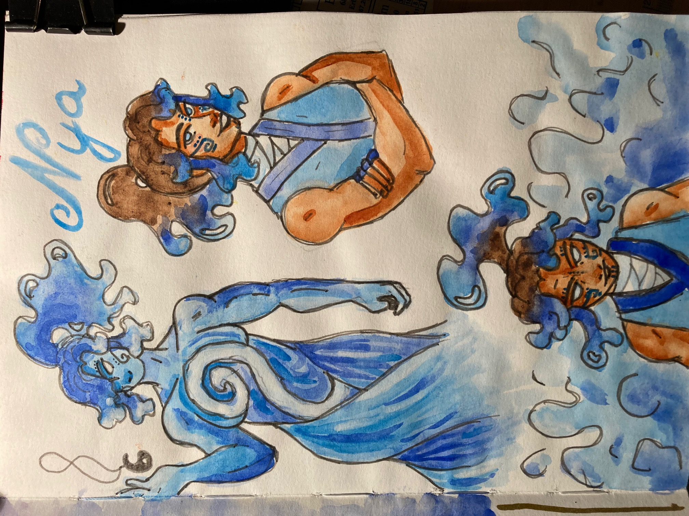
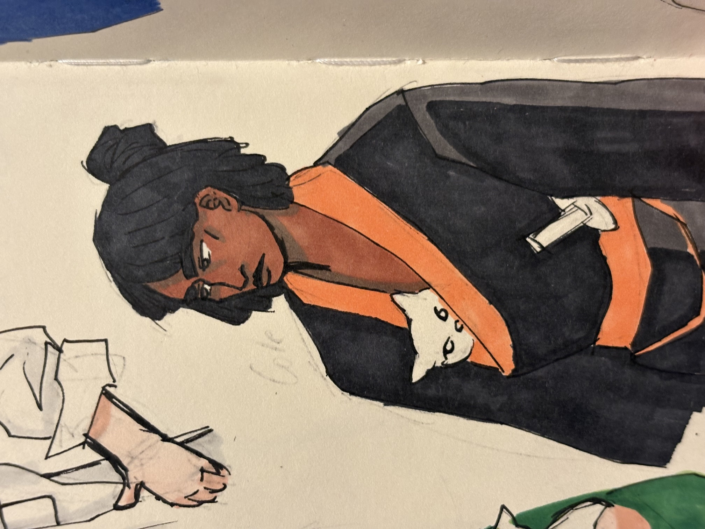
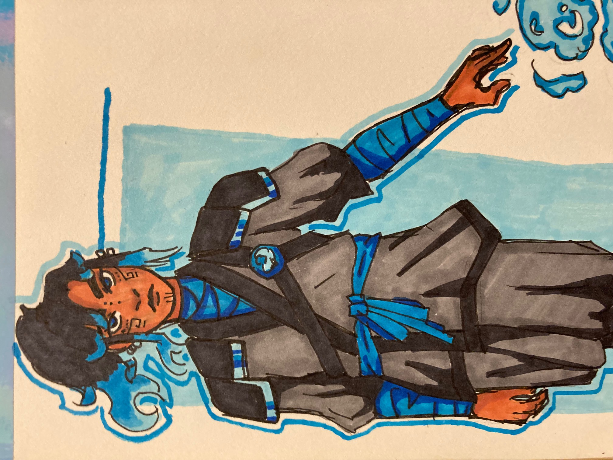

Ninjago to seria zabawek LEGO oraz amerykańsko-duński serial animowany dla dzieci. Oryginalna nazwa serialu to Ninjago: Masters of Spinjitzu, premiera pierwszego odcinka miała miejsce 14 stycznia 2011 roku na Cartoon Network w USA i Nikelodeon w Danii.
Serial był wyświetlany w latach 2011-2022 kończąc na sezonie 16, natomiast w 2023 Netflix wypościł reboot serii 1 czerwca na swojej platformie. Reboot, o nazwie Ninjago: Dragon’s Rising, jest kontynuowany i ma obecnie 4 sezony, gdzie druga czesc czwartego sezonu pojawi się na Netflix we wrześniu 2026
Twórcy Ninjago nigdy nie mieli na celu stworzyć serialu do swoich zabawek LEGO. Aby promować nową serie zestawów stworzono, oprócz standardowych reklam, dodatkowe 4 odcinki PILOTS. Miały one na celu zachęcić odbiorców do kupienia zabawek i tak się stało, a nawet jeszcze więcej. Po tych czterech odcinkach widzowie chcieli więcej, twórcy to zauważyli i z następnymi zestawami LEGO wychodził sezon serialu animowanego o tytule Ninjago: Masters of Spinjitzu. Fani zakochali się w postaciach, historii i świecie Ninjago, dobra sprzedaż oraz oglądalność sprawiły, że serial doczekał się 16 sezonow i filmu w 2017 The LEGO NINJAGO Movie.
Serial opowiada historię grupy nastolatków, którzy są trenowani przez swojego mistrza, Sensei’a Wu, aby zostać ninja. Głowni czterej bohaterowie: Kai, Cole, Zane i Jay, przezywają różne przygody i trenują aby bronić mieszkańców Ninjago. Każdy z nich ma moc żywiołu: ogień, ziemia, lód i błyskawice, ninja korzystają z nich i ze swoich broni do walki ze złem, które pojawia się co sezon pod inną postacią.
Początkowo serial zmieniał całkowicie fabułę co nowy sezon i rzadko nawiązywał do wydarzeń z poprzedniego sezonu, ale po 7 sezonie, gdzie postacie dostają swój największy redesign, historia zaczyna być bardziej spójna i czyny bohaterów maja więcej konsekwencji na dalsze losy.
Z nowym sezonem nowa przygoda, czy to duchy, niszczyciel światów, zły brat Wu, czy wężonowie, ninja stają do walki i dzielnie bronią swojego domu, ponieważ ninja się nie poddaje! (Ninja Never Quit! NinjaGO!)

Kai Cole Zane JaySerial w całości można obejrzeć na platformach Netflix oraz Amazon Prime Video. Dodatkowo pełna wersja serialu jest tez dostępna w wielu językach na YouTube, gdzie za darmo można śledzić losy bohaterów.






